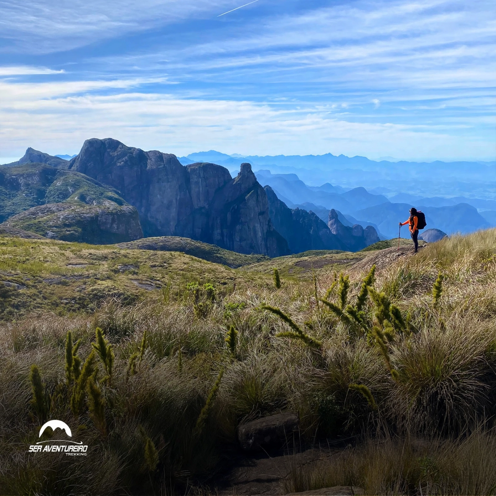

Trilhas de Teresópolis
Percursos para todos os níveis, passando por matas, cachoeiras e montanhas da Serra dos Órgãos.

Fácil
Trilha do Bosque
Percurso plano e sombreado, ideal para caminhadas leves e observação de aves.
Acessível · Famílias
Fácil
Cachoeira do Horto
Caminho curto que leva a uma cachoeira de águas claras, ótimo para banho e descanso.
Banho · Famílias
Moderada
Vale dos Frades
Trilha que atravessa floresta fechada com riachos e mirantes com vista para a serra.
Mirantes · Natureza
Moderada
Pedra do Sino
Sobe por matas de altitude até formação rochosa com vista panorâmica da região.
Vista · Fotografia
Difícil
Agulha do Diabo
Trilha exigente com trechos de escalada básica, leva a um dos pontos mais altos do parque.
Alpinismo · Experientes
Difícil
Travessia Teresópolis × Petrópolis
Percurso de um dia inteiro cruzando a serra, com paisagens deslumbrantes e desafios.
Guia recomendado · Um dia inteiro